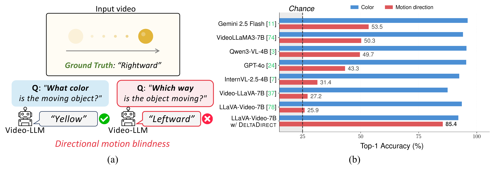
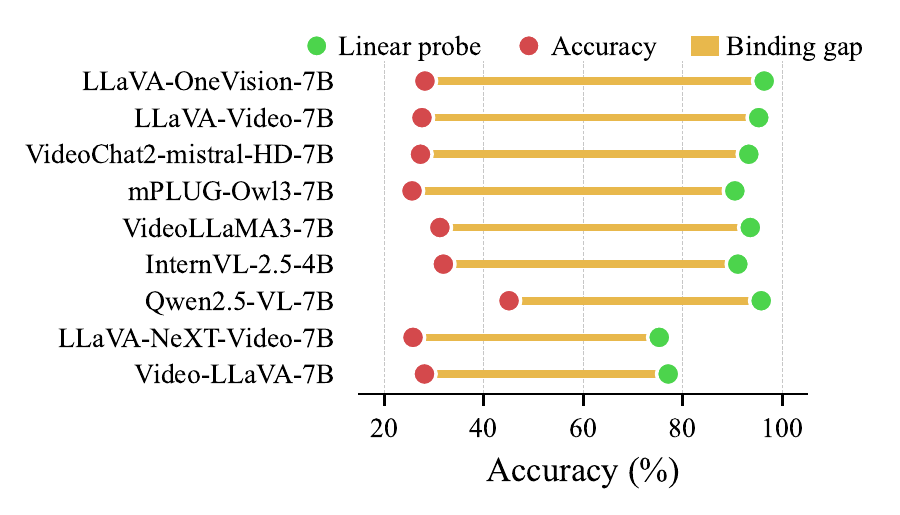
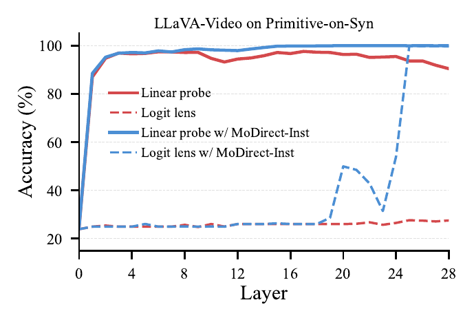
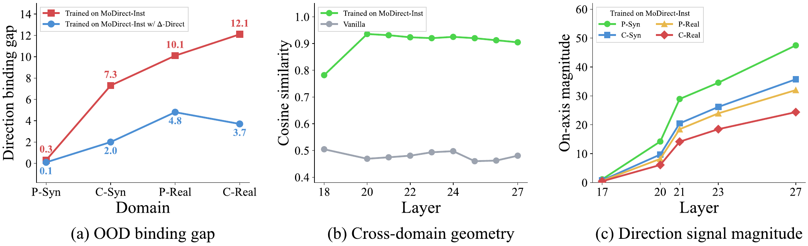

NeurIPS 2026
Which Way Did It Move? Diagnosing and Overcoming Directional Motion Blindness in Video-LLMs
1Kyung Hee University 2Princeton University
*Equally contributed first authors †Corresponding author
TL;DR On simple videos of a single object moving left, right, up, or down, most Video-LLMs perform near chance. We trace the failure to a direction binding gap and introduce MoDirect and DeltaDirect, which raise MoDirect-SynBench accuracy from 25.9% to 85.9%.
Animation: a circle moves from left to right. Asked which way it moved, the Video-LLM answers Left; the ground truth is Right.
From the viewer’s perspective, in which direction is the object moving in this video?
- A. Up
- B. Left Video-LLM
- C. Right Ground truth
- D. Down
Abstract
Video Large Language Models (Video-LLMs) have made rapid progress on temporal video understanding, yet many fail at a basic perceptual primitive: signed image-plane motion direction. On simple videos of a single object moving left, right, up, or down, most Video-LLMs perform near chance, with above-chance cases largely attributable to prediction biases rather than genuine direction understanding. We call this failure directional motion blindness. We localize the failure by tracing motion direction information through the Video-LLM pipeline. Motion direction remains linearly accessible from the vision encoder, projector, and LLM hidden states, but the readout fails to bind this signal to the correct verbal answer option, revealing a direction binding gap. Although synthetic motion direction instruction tuning reduces this gap on the source domain, motion direction concept vector analysis shows that visual complexity weakens the signal magnitude and limits out-of-domain generalization. We introduce MoDirect, a dataset family for motion direction instruction tuning and evaluation, and DeltaDirect, a diagnosis-driven, projector-level objective that predicts normalized 2-D motion vectors from adjacent-frame feature deltas. On MoDirect-SynBench, instruction tuning with DeltaDirect improves motion direction accuracy from 25.9% to 85.9%. On MoDirect-RealBench, DeltaDirect improves real-world motion direction accuracy by 21.4 points over the vanilla baseline without real-world tuning data, while preserving standard video-understanding performance.
Contributions
- 01 We identify directional motion blindness in Video-LLMs: despite strong appearance recognition, recent models fail to distinguish basic signed motion directions such as left, right, up, and down. We diagnose this failure as a direction binding gap, where motion direction information is linearly decodable but not reliably bound to the correct verbal response.
- 02 We show that instruction tuning closes the direction binding gap on the source domain but leaves an out-of-domain generalization gap. Through concept vector analysis, we trace this gap to a magnitude deficit in shared motion direction representations across domains.
- 03 We introduce MoDirect, a controlled dataset family for motion direction instruction tuning and evaluation, and propose DeltaDirect, a training-only auxiliary objective that predicts motion vectors from adjacent-frame feature deltas. DeltaDirect improves motion direction understanding while preserving or improving general video understanding.
Directional motion blindness
Consider a seemingly trivial synthetic video in which a yellow circle moves from left to right. Can a Video-LLM correctly tell which way it moves: left→right, right→left, bottom→top, or top→bottom? To our surprise, most Video-LLMs show accuracy close to random chance (25%), with GPT-5 only reaching 58.9% accuracy. Humans identify such motion directions instantly and effortlessly.
We refer to this systematic failure to distinguish signed motion directions as directional motion blindness.

MoDirect
MoDirect is a dataset family for signed image-plane motion direction, with three subsets: MoDirect-Inst, MoDirect-SynBench, and MoDirect-RealBench.
Its synthetic part contains four domains under a controlled 2×2 design over foreground type and background type. Each video contains a single foreground object moving in one of four signed directions: left, right, up, down.
Primitive-on-Syn6,000 videos
Primitive-on-Real6,000 videos
Cutout-on-Syn6,000 videos
Cutout-on-Real6,000 videos
MoDirect-Inst
100,000 video–QA pairs built from the Primitive-on-Syn domain for instruction tuning, with direction MCQ, open-ended direction, and static appearance questions.
MoDirect-SynBench
Four domains with 6,000 videos each, 1,500 per direction. Four-way multiple choice with randomized option order; chance is 25%.
MoDirect-RealBench
Real videos curated from Something-Something-V2 (722 samples), KTH (899), and TOMATO (403).
Where does directional motion blindness arise?
We trace motion direction information across the Video-LLM pipeline, from visual representations to the answer token, using LLaVA-Video.
1Direction is decodable, but not converted into the answer
A four-way linear probe on the frozen vision-encoder output recovers motion direction with 99.8% accuracy, and accuracy remains high at 96.5% on the projector output. Inside the LLM, visual-token probes achieve 98.1% and readout-token probes achieve 95.3%. The LLM does not simply discard the direction signal.
Yet the model achieves only 27.6% MCQ accuracy, near the 25% chance level. Because the option order is randomized, the model must bind the perceived direction to the option text in the current prompt. We call this mismatch the direction binding gap. Simple input-side scaffolds do not solve the task either: the best combination reaches only 34.7% on Primitive-on-Syn.
This gap persists across architectures and scales, indicating a shared structural limitation rather than a model-specific artifact.

2Instruction tuning closes the gap on the source domain
We fine-tune LLaVA-Video-7B on MoDirect-Inst, built from the simplest synthetic domain, Primitive-on-Syn. In the vanilla model, direction is highly decodable from the readout token, but its logit lens accuracy stays near chance, matching its low MCQ accuracy of 27.6%. After instruction tuning, logit lens accuracy rises in the late layers and converges to direction probing accuracy. MCQ accuracy correspondingly increases to 99.5%.
The binding gap reopens out of domain. Instruction tuning nearly closes the gap on the Primitive-on-Syn test set (0.3 points), but the gap reopens on OOD domains, e.g., 12.1 points on Cutout-on-Real. Although direction remains decodable from the final readout token, MCQ accuracy drops as object and background complexity increase.

3Shared orientation, weak magnitude
Using difference-in-means, we extract motion direction concept vectors from the readout position of each LLM layer for each domain and motion direction. After instruction tuning, these vectors become well aligned across domains, despite training only on Primitive-on-Syn.
Yet their magnitude drops sharply on complex domains, mirroring the accuracy drop. Rescaling the readout state along the concept-vector orientation to match the average Primitive-on-Syn magnitude improves OOD MCQ accuracy, with the largest gain of 15.5 points on Cutout-on-Real. The out-of-domain failure is not due to a missing motion direction geometry, but to a magnitude deficit.
